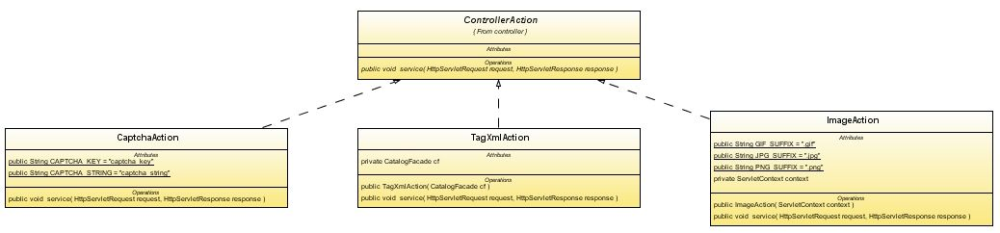

The following diagram shows the high level architecture for the petstore application
A number of factors were considered when designing the petstore application. Some of the key design considerations will now be outlined briefly:
Ajax UI features:
When you mouse-over a link to each pet in the master list of query
results, you get a pop-up box that has the details information. This
pop-up uses an Ajax request to retrieve the data from the server.
This pop-up functionality is implemented as a JSF component and is
delivered as a part of the BluePrints Solutions catalog.
One component that I wish was more widely used is the Popup Balloon.
This component can display detailed information about an object if it
is trigger from the the mouseover Javascript event. This information is
retrieve asynchronously through an Ajax call and shown once retrieval
is complete. For Example:

This methodology is used on some sites, but the idiom isn't used
nearly
as much as I would like. Currently, the AJAX Popup Balloon retrieves information
through a jsp page that formulates and sends a response to a query.
There is detailed
documentation contained in the EE5 Java Blueprints Solutions Catalog on the
Popup Balloon's use and implementation as well as the other components
the bundle provides.
We chose to wrap most of the functionality in reusable JSF components. The JSF component library is written with JSF 1.2 version.
The client controller is written in JavaScript and runs inside the browser of the user. The Web controller is written as a servlet.
The client-controller manages the UI presented to the user, and sends requests to the Web controller for getting data.
The Web controller uses action classes mapped to various request URLs to handle requests sent by the client controller.
This communication is done in JSON.
Tagging is implemented using the Lucene search engine.
The "Add Tags" functionality uses a hidden form to capture the tag data. When the "Add Tags" button is clicked the form is made visible for the user to enter their tags. Once the "Save" button is clicked, an Ajax request is sent to the server with the added tag string. The response to the request will update the tag data field that is currently displayed to the user. If other users added a tag to the same item, the other users tags would also be displayed. This methodology of re-synchronizing the data helps prevent situations where the client data becomes out of sync with the server data when the same item is edited by different users.
The tag page shows the top tags based on the number of items that
reference the tag. CSS styles are used to change the font and color
of the tag also based on the number of references. When a tag is
clicked, an Ajax call in executed to retrieve the items that are
reference by the tag and then displayed. This page also has the popup
feature and a hyper-link in the name of the item that will forward the
user to the specific item on the catalog page, showing its detail.
Updating Indexes in Lucene for
Tagging:
One thing to keep in mind is that Lucene doesn't allow an index to be
updated, the specific index has to be deleted then re-created.
When adding a new tag to an item or updating a document index you have
to
be able to access all the data that was originally in the index before
re-creating it. This sounds straightforward but there is on
caveat. If you index items using an approach that doesn't allow
retrieval of all the data in the index, you will have to read the data
from a
persistent store so the index can be completely re-created. You
can get in this state when you create a
org.apache.lucene.document.Field for the documents index utilizing the
"UnStore" method or "Text" method with a Reader. When using these
methods, the data can't be retrieve via the exposed APIs. This
really isn't a big deal once you factor it in to your approach. Our
tagging requirement came after the initial implementation was completed
and it caused some problems that made us have to re-think our index
scheme.
This is implemented by using Google Maps API. Present implementation details.
This is implemented by using Apache Lucene search engine. Present implementation details.
In the petstore we used the Apache Lucence search engine to store
our indexes. The name, description and tags are stored in the index
and can be searched on. If the user only wants to search on the name
and the description and not the tags, then the "Also Search Tags"
checkbox can be unclicked. All the information that is contained in
the indexes are also stored in the database, so if a corruption
occurs, the indexes can be regenerated. Using the Lucene search
engine gives the Petstore a faster response to queries and also
supports advance search engine syntax which we would have to have
coded if we only use a database search methodology.
Considering our needs and the fact that
our Java EE 5 application's web interface is largely based on Web
2.0 that utilizes
AJAX to present most page content. We decided to write our own
interface that pulls data from the database to create the
indexes. We found when serving page content using AJAX &
DHTML, the web crawling paradigm becomes convoluted. This is due
to the fact that it is hard for the crawler to know the relevant
content that is associated with a specific item. This is
especially true when the content is retrieved through Javascript events
that haven't been fired by the crawler, like a Javascript
mouseover. This problem can be mitigated by methodical use of the
robots.txt
file
and meta tags in the HTML pages that are served to give the web crawler
the correct pages with the correct data. Amazon uses this
approach by including meta tags like "description" and "keywords"
coupled with a restrictive robots.txt file to
help companies like Google index their site correctly.
We are using meta tags to help external web crawlers index our site
properly, but thought our own search results should be as accurate as
possible for the items we are offering. To store the data to be
indexed it was easy to use the new persistence APIs in JavaEE5 based on
POJOs.
With our
development environment consisting of Netbeans
5.5 and the Glassfish AppServer
development went very smooth. All that was required to make the
Lucene APIs available was to package it with our application. One
note, be careful where you store your indexes. If you store them
under the deployed application directory, they will be removed when you
redeploy/update your application. We decided to store the indexes
under the domains lib directory (e.g.
"/glassfish/domains/domain1/lib/indexDir"), which can be accessed using
the Glassfish System.getProperty("com.sun.aas.instanceRoot") +
"/lib/indexDir", but the location is totally up to you.
Captchas Validation
The Captchas validation was implemented utilizing a
servlet filter. The CaptchaValidateFilter checks the uploaded
Captchas value that is sent in a cookie (so the multi-part mime stream
doesn't have to be touched) and validates it against a corresponding
string that is set in the session when the Seller upload page is
rendered. If the case insensitive values matches, then the upload
proceeds. If not, then a status object is set with the error so
it can be read by the client and shown to the user, then the upload is
discontinued.
Upload Size Validation
For maintenance and security purposes, I put a limit on the upload size
of approximately 100K. I didn't want the users to be able to
upload monstrous images which could cause a maintenance problem in
terms of disk space and put unnecessary load on the server, which could
cause a form of denial of service attack. Since the upload is in
multi-part mime format, allowances has to be made for accompanying data
and multi-part mime overhead. I limited the overall upload to
150K which should provide ample room for a 100K image to be
uploaded. If the upload size was less than 150K, then the
upload proceeds. If
not, then a status object is set with the error so it can be read by
the client and shown to the user, then the upload is
discontinued. I added this validation check to the servlet filter
so processing would stop as early as possible, if the upload was too
large.
Server Side Validation
On the server side the validation that was performed on the client is
reimplemented. This functionality is necessary to catch cases
where users disable Javascript on their browser or try to hack a
submission by sending the request directly to the server using some
alternate method. The risk of submissions being sent by the
browser without Javascript turned on is mitigated by performing the
actual submission of the form using Javascript, but utilizing other
tools like plug ins, this preliminary defense can easily be
overcome. With server-side validation you really must show all
the errors for the upload at one time versus showing the user one error
at a time. If you don't then the user must keep submitting the data and
endure the propagation delay to see the next error. This
functionality was implemented in each entity's specific class, for
example, the Address class validates its own data, but since the Item
class is a composite class, it validates is own data and calls the
validation methods for any of the classes that it contains, like the
Address class.
The Main Map page is another front-end map page that utilizes the
database through the Java Persistence APIs to retrieve catalog items
by category. This page leads into the Google Maps client-side mashup
page and displays the catalog items on the map for the selected
category. By entering an optional center-point address with a search
area (in miles), the user can further restrict the category to show
only the items in the specific area around the center point.
<html>37.395746
<head>
<!-- Include Google Maps Javascript Library -->
<script type="text/javascript" src="http://maps.google.com/maps?file=api&
v=1&key=ABQIAAAAyQYKk4__l80DyIsqLPvvuxTwM0brOpm-All5BF6PoaKBxRWWERSt2NPUufvDhWGdrb-pCzTZQ2vi2A">
</script>
<script type="text/javascript">
function load() {
if (GBrowserIsCompatible()) {
// create map component in div with the id = "map"
var map = new GMap2(document.getElementById("map"));
// create map components components
map.addControl(new GSmallMapControl());
map.addControl(new GMapTypeControl());
// create center point when map is displayed
map.setCenter(new GLatLng(,-121.952234), 13);// create information balloon for center point when map is displayedmap.openInfoWindow(map.getCenter(), "<b>Sun's Santa Clara Campus</b><br/>4150 Network Circle, Santa Clara, CA 95054");// create clickable point in the same place as the center point, so the user can
// re-open the info balloon if they close itvar point = new GLatLng(37.395746,-121.952234);
map.addOverlay(createMarker(point, 1));
}
}function createMarker(point, number) {
var marker = new GMarker(point);// create clickable point with title for addressGEvent.addListener(marker, "click", function() {
marker.openInfoWindowHtml("<b>Sun's Santa Clara Campus</b><br/>4150 Network Circle, Santa Clara, CA 95054");
});
return marker;
}</script>
</head>
<body onload="load()"><!-- div to hold Google map --><div id="map" style="border-style:ridge; width:700px; height:500px"></div></body>
</html>

Here the latitude and longitude are pre-populated and were acquired
when the title and address was captured and persisted in the
database. If this doesn't apply in your case, you can use Google's
GeoCode to retrieve the latitude and longitude for the address you
are trying to plot.
The client controller is implemented with JavaScript and uses the Dojo toolkit library. It uses dojo.io.bind for making all the Ajax calls.
The client controller generates action events that are then handled by handlers.
The client controller also provides hooks (action handlers) to apply business logic, or GUI logic
The model data is cached on the client-side
We use View List Handler pattern to iterate over a large list of model data.
The controller is implemented as a set of action classes each of which implements the ControllerAction interface.

The ControllerServlet creates a mapping of these action classes with different request URIs, and then invokes actions based on the incoming request URI.
Controller Action classes are used to apply business logic for the incoming requests.
Object relational layer using Java Persistence API